Neoprint
Neoprint is a drop-in replacement for Python’s built-in print, made for
modern consoles. It keeps the API you already know, and adds colors, source
locations, variable names, readable object layouts, progress bars, and pretty
tracebacks on top of it.
import neoprint as np
name = 'Alice'
age = 30
np.show(name, age, ':n')
main.py:4 | name = "Alice"; age = 30
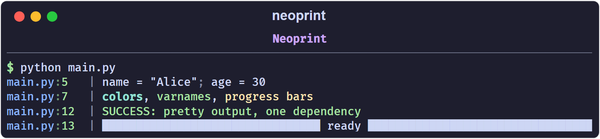
The same line with built-in print would be a plain Alice 30, invented by
you and understood by no one six months later.
What you get
- Drop-in API.
neoprint.printisneoprint.show; import it asprintand existing calls keep working. - Source locations. Every message is prefixed with
filename:lineno, so you always know which line spoke. - Color everywhere. True-color text, BBCode-like inline markup, bright and dim variants, and proper red/green highlighting for booleans.
- Variable names and expressions.
np.show(len(names), ':n')printslen(names) = 2. - Readable containers. Nested lists and dicts can be expanded into a tree, a key-value table, or a grid.
- Progress bars. Both
with np.Progress(...)andfor x in np.progress(...)are built in. - Pretty exceptions. One mark turns an exception into a Rich traceback panel, optionally with local variables.
- One dependency. Only
rich.
Installation
pip install neoprint
Python 3.9 or newer is required.
Hello world
from neoprint import print
print('hello world')
main.py:2 | hello world
That is the whole story for a single script. Continue with
Installation and Hello World to learn the package-wide
setup() mode, or jump to Printing Basics for the anatomy
of a message.
How this manual is organized
- Getting Started covers installation and the anatomy of a message.
- Markup explains the
:xNmarks, which are the main extension point of the library, and lists every mark in one table. - Guides walks through each feature with runnable examples: verbosity, variable names, expanded formatting, rich text, index counters, timing, dividers, exceptions, source layers, and progress bars.
- Reference documents the configuration switches and the public API.
If you only read two pages, read Printing Basics and Markup Reference.
Installation and Hello World
Requirements
- Python 3.9 or newer
- A modern terminal. Windows Terminal, iTerm2, GNOME Terminal, and the integrated terminals of VS Code and PyCharm all work. If colors look wrong on an old Windows console, see Configuration.
Install
pip install neoprint
The only runtime dependency is rich.
Hello world
import neoprint as np
np.show('hello world')
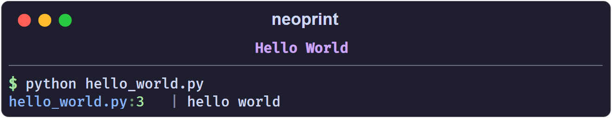
The message is made of two parts:
- a head —
main.py:3— showing where the call happened, - a body —
hello world— the text you passed.
A thin | separator sits between them. Both parts are colored: the file name
is blue, the line number green, the separator dim.
Use it as print
neoprint.print is a plain alias of neoprint.show, so you can keep the name
you are used to:
from neoprint import print
print('hello world')
If you want to swap it in for an entire script without touching every call, simply shadow the built-in:
from neoprint import print
print('this is neoprint now', 1, 2, 3)
Note that the built-in print accepts keyword arguments such as file= and
end=. Neoprint’s print does not; for those cases use the mark :s2 (see
Printing Basics) or the real builtins.print.
Enable it for a whole package
Editing imports in every module is noisy. Call setup() once in your
package’s __init__.py:
# some_package/__init__.py
import neoprint
neoprint.setup()
# regular exports
from .foo import bar
From then on, every built-in print(...) call inside some_package is
routed through neoprint automatically. Calls in other packages, and in the
standard library, keep using the built-in print — setup() patches the
built-in only for the package that called it.
To undo the patch:
import neoprint
neoprint.unload()
Try the examples
The repository ships runnable examples:
python examples/hello_world.py
python examples/all_markup_usage.py
python examples/progress.py
Next: Printing Basics.
Printing Basics
Arguments are joined with semicolons
Multiple positional arguments are printed one after another, separated by a
dim ; and a space:
import neoprint as np
np.show('Multiple', 'arguments', 'are', 'semicolon-separated')
np.show(123, 456, 'mixed types', True, False, None)
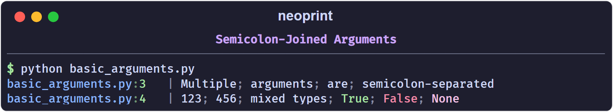
Booleans are highlighted: True is green, False is red, None is magenta.
If you want a different join style, pass :l (one value per line, see
Expanded Formatting) or format the string
yourself and pass a single argument.
Where to put a markup
A markup is a short string such as ':n', ':v8' or ':d2v7t' that
changes how the message is rendered. Each character in it enables one feature;
an optional digit selects a variant.
A markup is recognized in exactly two positions:
- as the first positional argument,
- as the last positional argument.
np.show(':d', 'Section title') # first
np.show('Section title', ':d') # last
np.show('Section title', markup=':d') # keyword
Anything else is treated as ordinary text:
np.show('a', ':n', 'b') # ':n' is printed literally
main.py:1 | a; :n; b
The string must look like a markup to be treated as one: it has to start with
: and contain only the known mark letters. Something like ':)' or
': not a markup' is plain text.
Combining marks
Marks can be stacked in a single string. Each mark letter may carry at most one digit:
np.show(':d2v7t', 'End')
main.py:1 | [16:57:41 -> 16:57:41 (4ms)] ██████████ End ██████████
Read it as :d2 + :v7 + :t. Order does not matter.
Bare marks and their defaults
Writing a mark without a digit selects its default variant. For example :i
is :i1 and :e is :e2:
| Mark | Bare form means |
|---|---|
:d | :d1 thin divider |
:e | :e2 traceback panel |
:i | :i1 line-level counter |
:l | :l1 expanded format |
:n | :n1 show variable names |
:p | :p1 parent frame |
:r | :r1 inline markup enabled |
:s | :s1 short form |
:t | :t2 time since last mark |
:v | :v0 debug level |
The full list is in Markup Reference.
Quiet and plain modes
Two marks reduce or remove neoprint’s decoration:
:s1keeps colors but drops the source head and variable names.:s2hands the arguments to the built-inprintuntouched.
np.show(':s1', 'no source, no varnames')
np.show(':s2', 'built-in print behaviour')
no source, no varnames
built-in print behaviour
:s2 is handy when a call must accept the same keyword arguments as the
built-in print (for example file=sys.stderr).
A note on string formatting
Neoprint follows the convention of this project: prefer str.format over
f-strings, because f-strings in log calls are evaluated even when the output
is filtered by verbosity.
np.show(':v1', 'loaded {} items'.format(count))
Next: How Markup Works.
How Markup Works
Neoprint keeps the print signature. Instead of adding dozens of keyword
arguments, it adds one optional string — the markup — that switches
features on.
Grammar
A markup starts with : and is a concatenation of mark letters, each
optionally followed by a single digit:
:n one mark, default variant
:v8 one mark, variant 8
:i0 reset the index counter
:d2v7t three marks combined
The valid letters are d, e, f, i, l, n, p, r, s, t, v.
Digits are 0-9.
A string is only treated as a markup when it matches this grammar exactly and
is in the first or last positional slot (or passed via markup=). Otherwise it
is printed literally, so ordinary text like ':' or ':)' never gets
misinterpreted.
What a mark can change
Every mark affects one of three layers of the output:
| Layer | Marks | Examples |
|---|---|---|
| The head (left of the separator) | p | show the caller of the caller |
| The prefix inside the body | i, t | [3] index, [12:00 -> 12:01 (1m)] timing |
| The values and layout | d, e, l, n, r, s, v | colors, tables, dividers, tracebacks |
Order of marks does not matter
:tiv2 and :v2it are the same markup. What matters is the position inside
the call, and the digits.
Some pairs conflict
:d(divider style) and:l(expanded format) cannot be used together. A divider wraps the body in a single line, an expanded format spreads it over many; neoprint rejects that combination with anAssertionError.:r2and:l2mean the same thing. When both are given, the:lone is kept.:doverrides:r2by turning it off.
When in doubt, enable one layout mark at a time.
Marks are per call
Marks do not stick. np.show('x', ':v8') prints one red line; the next call
starts from the defaults again. The only stateful features are the index
counters (:i) and timers (:t), and they have explicit reset marks
(:i0, :t0).
Where to go next
- Markup Reference — every mark, every variant.
- Individual guides under Guides explain each feature in depth.
Markup Reference
One table, every mark. The Default column marks the variant used when the
letter is written without a digit (* = the bare form selects this variant).
Divider d
| Default | Mark | Description |
|---|---|---|
:d0 | no divider | |
| * | :d1 | thin divider line |
:d2 | thick divider line |
See Dividers.
Exception e
| Default | Mark | Description |
|---|---|---|
:e0 | no special handling; print as ordinary value | |
:e1 | print the exception message in red | |
| * | :e2 | Rich traceback panel |
:e3 | Rich traceback panel with locals (show_locals) | |
:e4 | reserved, not implemented |
See Exception Printing.
Flush f
| Default | Mark | Description |
|---|---|---|
| * | :f1 | reserved |
The f mark is parsed for forward compatibility but currently has no effect on
the output. Do not rely on it.
Index i
| Default | Mark | Description |
|---|---|---|
:i0 | reset counters | |
| * | :i1 | line-level counter (one counter per source line) |
:i2 | scoped counter (per function, or per np.scope) | |
:i3 | global counter |
See Index Counters.
Layout l
| Default | Mark | Description |
|---|---|---|
:l0 | inline representation | |
| * | :l1 | expand containers over multiple lines |
:l2 | tailored layout (tables, key-value grids, a -> b transforms) |
See Expanded Formatting.
Varnames n
| Default | Mark | Description |
|---|---|---|
:n0 | hide variable names | |
| * | :n1 | show variable names and expressions |
See Variable Names.
Parent layer p
| Default | Mark | Description |
|---|---|---|
:p0 | head points at the current frame | |
| * | :p1 | head points at the caller |
:p2 | caller’s caller | |
:p3+ | one frame further up per number |
See Source Layers.
Rich text r
| Default | Mark | Description |
|---|---|---|
:r0 | inline markup disabled | |
| * | :r1 | inline markup enabled ([red]...[/]) |
:r2 | same as :l2 |
See Rich Text.
Short s
| Default | Mark | Description |
|---|---|---|
:s0 | full output | |
| * | :s1 | short form: no source head, no variable names |
:s2 | delegate to the built-in print |
See Printing Basics.
Timing t
| Default | Mark | Description |
|---|---|---|
:t0 | reset the timer | |
:t1 | absolute timestamp | |
| * | :t2 | time since the previous :t2/:t3 call |
:t3 | time since the scope timer was reset |
See Timing.
Verbosity v
| Default | Mark | Description | Color |
|---|---|---|---|
| * | :v0 | debug | gray |
:v1 | negative info | magenta | |
:v2 | positive info | blue | |
:v3 | weak success | dim green | |
:v4 | success | green | |
:v5 | weak warning | dim yellow | |
:v6 | warning | yellow | |
:v7 | weak error | dim red | |
:v8 | error | red | |
:v9 | critical | reserved, not implemented |
See Verbosity Levels.
Verbosity Levels
The v mark colors a message according to its severity. The scale runs from
v0 (debug) to v8 (error); odd numbers are dim variants of the even one
above them.
import neoprint as np
np.show(':v0', 'v0 debug')
np.show(':v1', 'v1 negative info')
np.show(':v2', 'v2 positive info')
np.show(':v3', 'v3 weak success')
np.show(':v4', 'v4 success')
np.show(':v5', 'v5 weak warning')
np.show(':v6', 'v6 warning')
np.show(':v7', 'v7 weak error')
np.show(':v8', 'v8 error')
| Level | Meaning | Color |
|---|---|---|
v0 | debug | gray |
v1 | negative or serious info | magenta |
v2 | positive or neutral info | blue |
v3 | weak success | dim green |
v4 | success | green |
v5 | weak warning | dim yellow |
v6 | warning | yellow |
v7 | weak error / failure | dim red |
v8 | error / failure | red |
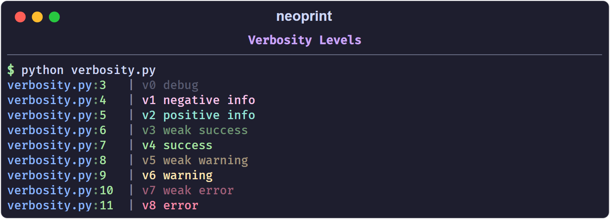
The color covers the whole body of the message, not the source head.
Shorthand functions
For the levels you use most, import the ready-made helpers:
from neoprint import debug, info, success, warning, error
debug('user has come here')
info('welcome to the city')
success('file created')
warning('target file exists, will overwrite it')
error('failed to create the file')
Each helper is just a call with the matching mark already applied, so marks can still be appended:
error('failed: {}'.format(err), ':d') # red message wrapped by dividers
The helpers are functools.partial objects, not separate implementations, so
they accept the same arguments as np.show.
Choosing a level
A useful rule of thumb:
v0/v1for traces you read while developing;v2/v4for confirmations the user of your program cares about;v6for recoverable surprises;v8for failures that stop the current task.
If you only need colored text and not a semantic level, prefer inline markup
in :r1 mode — see Rich Text.
Variable Names
The n mark prints each argument next to its source expression. Neoprint reads
the source line you called it from, so you never have to type 'name ='
yourself.
import neoprint as np
name = 'Alice'
age = 30
city = 'New York'
np.show(name, age, city, ':n')
main.py:6 | name = "Alice"; age = 30; city = "New York"
Expressions work too
Plain names are only the beginning. Function calls and attribute accesses are also reconstructed:
names = ['Alice', 'Bob']
np.show(len(names), ':n')
class Box:
def __init__(self):
self.value = 42
box = Box()
np.show(box.value, ':n')
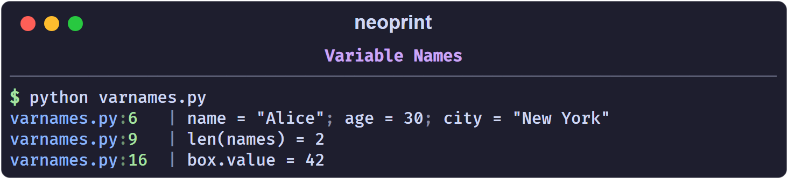
Enable it globally
If you want variable names on every call without repeating the mark, turn on the configuration switch:
import neoprint as np
np.config(show_varnames=True)
name = 'Alice'
np.show(name) # name = "Alice"
Restore the default with np.config(show_varnames=False) or
np.config.reset().
Limitations
- The function has to keep a recognizable name. Neoprint only inspects
calls to
print,show,debug,info,success,warning,error,format, andformat_list. If you alias the import, for examplefrom neoprint import show as s, the call no longer looks like one of those names and the mark cannot resolve the arguments. Usefrom neoprint import print(the name isprint) instead of renaming. - Literals have no name.
np.show(42, ':n')prints42, because there is nothing to reflect. - Truthiness of the mark.
:n0hides names,:n1(bare:n) shows them.
How it works, briefly
The source file of the calling frame is parsed with ast and cached per
modification time. The analyzer finds the Call node on the reported line and
reads the source segment of each argument. That is why the names are exactly
what you wrote — including spacing inside longer expressions — and why the
feature costs one file parse per source change, not per call.
See also Source Layers for how the head of a message is resolved.
Expanded Formatting
By default neoprint prints values the way repr would — on one line. The l
mark trades width for readability.
:l0 — inline (default)
import neoprint as np
data = {'users': [{'name': 'Alice', 'tags': ['dev', 'ops']},
{'name': 'Bob', 'tags': ['design']}]}
np.show(data)
main.py:5 | {'users': [{'name': 'Alice', 'tags': ['dev', 'ops']}, {'name': 'Bob', 'tags': ['design']}]}
Readable for a glance, painful for anything deeper.
:l1 — expand over multiple lines
:l1 (or the bare :l) walks the container recursively and indents each
level by two spaces:
np.show(data, ':l')
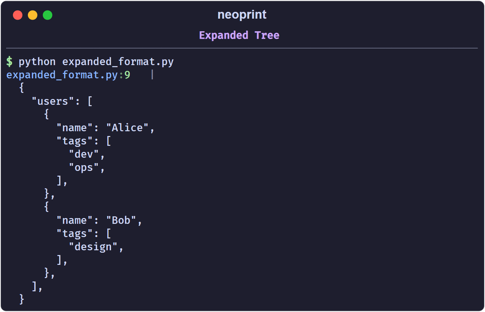
Strings are quoted, trailing commas are added, and the indentation is
controlled by np.config(multiline_indent=N) (default 2).
:l2 — tailored layouts
Certain shapes get a purpose-built layout instead of the generic tree. If an
object does not match any of them, :l2 falls back to :l1 behaviour.
Sequence of rows → grid
A list or tuple whose first row is a header of strings becomes a table:
np.show(':l2', [('id', 'name'), ('1', 'Alice'), ('2', 'Bob')])
main.py:1 |
╭────┬───────╮
│ id │ name │
├────┼───────┤
│ 1 │ Alice │
│ 2 │ Bob │
╰────┴───────╯
dict[str, str] → key-value table
np.show(':l2', {'name': 'neoprint', 'version': '1.0.0'})
main.py:1 |
╭─────────┬──────────╮
│ KEY │ VALUE │
├─────────┼──────────┤
│ name │ neoprint │
│ version │ 1.0.0 │
╰─────────┴──────────╯
a -> b strings → colored transform
A string containing -> is rendered as a red-to-green transition, with an
optional label before a colon:
np.show(':l2', 'v0.1.0 -> v0.2.0')
np.show(':l2', 'status: draft -> published')
main.py:1 | v0.1.0 -> v0.2.0
main.py:2 | status: draft -> published
(The left side is red, the right side green, the label stays default-colored.)
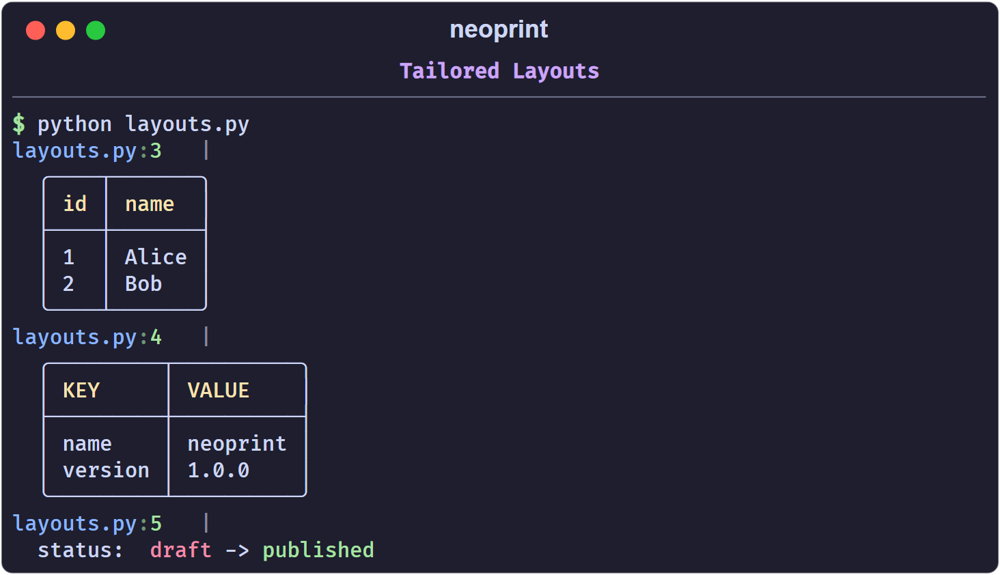
Shorthand functions
np.expand(x) is np.show(x, ':l'), and np.expand2(x) is
np.show(x, ':l2'):
from neoprint import expand, expand2
expand([1, 2, 3])
expand2([('k', 'v'), ('a', 'b')])
Note that :l cannot be combined with :d on the same call; see
How Markup Works.
Rich Text
The r mark controls inline styling inside the strings you print.
:r1 — inline markup
With :r1 (or bare :r), text enclosed in BBCode-like tags is colored and
styled:
import neoprint as np
np.show(':r1', '[red]red[/] [green bold]green bold[/] [dim]dim[/]')
main.py:3 | red green bold dim
The console output is colored; the plain rendering above shows the text only.
Tags
A tag is [ + space-separated parts + ]. Parts are either a color name or a
style name:
- colors:
black,red,green,yellow,blue,magenta,cyan,white,default, and thebright_*variants of the first eight; - styles:
bold,dim,italic,underline, plus the short formsb,i,u.
Close a tag with [/]. Tags nest, and unclosed attributes inherit from the
enclosing tag:
np.show(':r1', '[red bold]both[/] [red]red only[/]')
np.show(':r1', '[red bold]outer [green]green keeps bold[/][/]')
To print a literal [, escape it: \[.
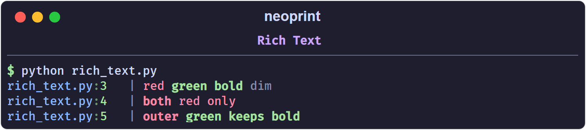
:r2 — tailored layout
:r2 is an alias of :l2: it applies the special layouts described in
Expanded Formatting (grids, key-value tables,
a -> b strings). Use it when you think of the flag as “render this nicely”
rather than “expand this structure”; the result is the same.
Markdown
For long-form text, neoprint offers a dedicated helper:
import neoprint as np
np.markdown(
'''
# Title
- item 1
- item 2
'''
)
The string is rendered by Rich’s Markdown renderer, with headings, lists, and inline code styled. An optional markup can be given as the first argument to add a source head or other prefixes:
np.markdown(':d', '# Chapter 1')
Pre-colored segments
For programmatic use — building a message from pieces with their own colors — neoprint exposes a small text object:
import neoprint as np
np.show(np.Text('plain text object', 'cyan', 'bold'))
Text(value, color, style) accepts the same color and style names as the
inline markup. It is exported at the top level as np.Text.
Index Counters
The i mark attaches a running counter to the message, so sequences are easy
to follow without writing print(i, ...).
import neoprint as np
np.show(':i2', 'Monday')
np.show(':i2', 'Tuesday')
np.show(':i2', 'Wednesday')
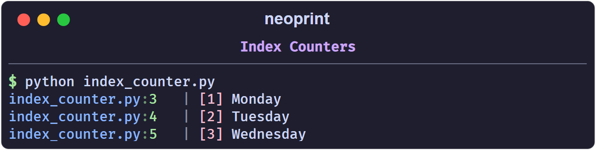
Every counter is rendered as [n] before the body, in a color derived from its
frame, so values stand out from the text.
The four counters
| Mark | Scope | Counter increments |
|---|---|---|
:i1 | one per source line | every time that line runs |
:i2 | one per scope | every call in the same function, class body, module, or np.scope() block |
:i3 | global | every call, anywhere |
:i0 | — | resets all counters |
Bare :i is :i1.
Line-level (:i1)
Best for loops and repeated single lines:
for _ in range(3):
np.show(':i1', 'line')
main.py:2 | [1] line
main.py:2 | [2] line
main.py:2 | [3] line
Two different lines each start at [1], because they own separate counters.
Scoped (:i2)
Best when several lines form one logical stream. The scope is the enclosing function (or class body, or module):
def stage():
np.show(':i2', 'step one')
np.show(':i2', 'step two')
stage()
stage()
main.py:3 | [1] step one
main.py:4 | [2] step two
main.py:3 | [3] step one
main.py:4 | [4] step two
Global (:i3)
A single counter shared by the whole program:
np.show(':i3', 'G1')
np.show(':i3', 'G2')
main.py:1 | [1] G1
main.py:2 | [2] G2
Resetting
np.show(':i0') # reset every counter
np.show(':i', 'back to [1]')
Custom scopes
np.scope() opens a named region. Inside it, :i2 counters are keyed by the
scope name instead of the function, which lets unrelated blocks share — or
deliberately not share — a counter:
with np.scope(name='download'):
np.show(':i2', 'file A')
np.show(':i2', 'file B')
np.show(':i2', 'file C')
np.show(':i2', 'file D')
np.show(':i2', 'file E')
with np.scope(): # anonymous scope
np.show(':i2', 'anonymous 1')
np.show(':i2', 'anonymous 2')
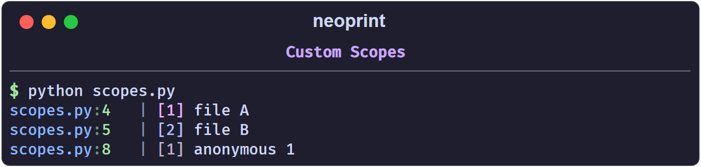
Scopes also give :t3 its own timeline; see Timing.
Colors
Counter colors are generated per source frame from a bright hex palette and
rendered with terminal true color. You do not choose them; they only serve to
tell frames apart. :i3 is always red.
Shorthand
np.index(x) is np.show(x, ':i2').
Timing
The t mark prepends a timestamp to the message. It is useful for tracing how
long stages take without exporting metrics.
import neoprint as np
from time import sleep
np.show(':t', 'starting')
sleep(0.2)
np.show(':t', 'loaded config')
sleep(0.5)
np.show(':t', 'connected')
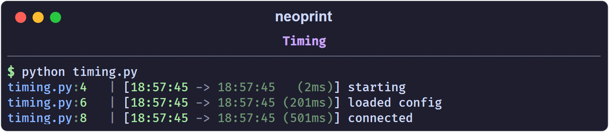
The prefix shows [<previous_timestamp> -> <current_timestamp> (<delta>)].
Formatting scales automatically: milliseconds for short gaps, seconds,
minutes, hours for long ones.
The four variants
| Mark | Means |
|---|---|
:t1 | absolute timestamp only, no delta |
:t2 | time since the previous :t2/:t3 call (bare :t) |
:t3 | time since the scope timer started, or since :t0 |
:t0 | reset the timer |
:t2 and :t3 share one “instant” pointer, so alternating them measures each
step against the previous call. :t0 moves that pointer to now and restarts
the current scope’s timer.
To shorten the duration form, use :ts/:t2s/:t3s, it strips the previous
timestamp from the output:
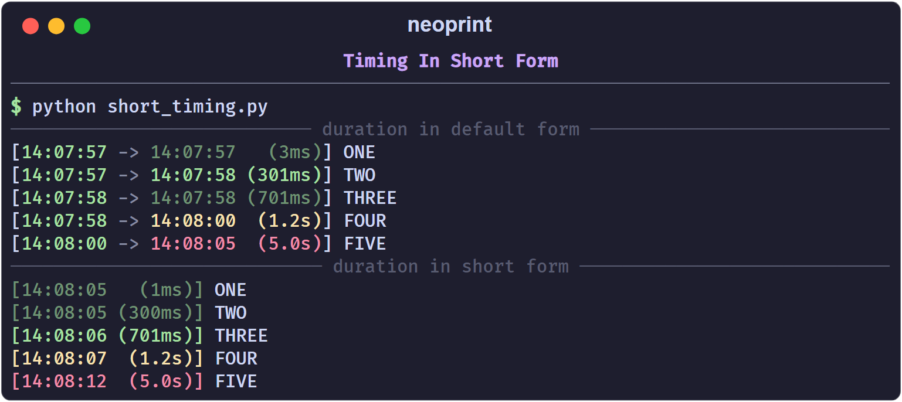
Scopes
Inside np.scope(), :t3 measures from the moment the scope was entered:
with np.scope(name='job'):
np.show(':t3', 'start')
sleep(1)
np.show(':t3', 'one second into the job')
Outside a scope, :t3 measures from the most recent :t0.
Practical pattern
:t is most useful as a drop-in replacement for ad-hoc
time.perf_counter() logging:
np.show(':t', 'begin download')
data = download()
np.show(':t', 'downloaded {} bytes'.format(len(data)))
np.show(':t', 'done')
Dividers
The d mark frames a message with a horizontal rule. It is a lightweight way
to separate sections in a long run of output.
import neoprint as np
np.show(':d', 'Section title')
np.show('some line')
np.show('another line')
main.py:3 | ──────────────────── Section title ─────────────────────
main.py:4 | some line
main.py:5 | another line
The rule spans the console width; the text you passed sits in the middle.
Variants
| Mark | Look |
|---|---|
:d1 | thin line (bare :d) |
:d2 | thick block line |
np.show(':d1', 'thin')
np.show(':d2', 'thick')
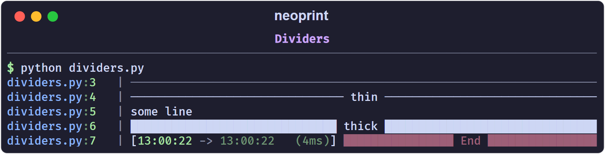
Interaction with other marks
:dcannot be combined with:l— a divider needs a single-line body. Combining them raises anAssertionError; see How Markup Works.:dturns:r2off, because:r2produces multi-line layouts too.- Any other mark, such as
:v8or:i, still applies:np.show(':d2v7t', 'End')yields a thick divider with a timestamp, rendered in thev7(dim red) style.
Shorthand
from neoprint import divider
divider('Section title')
Exception Printing
The e mark decides what happens when an exception object is among the
arguments.
:e0 — plain
No special handling; the exception is printed like any other value.
import neoprint as np
try:
1 / 0
except ZeroDivisionError as e:
np.show(e, ':e0')
main.py:6 | division by zero
:e1 — red message
The message is printed in red, without a traceback:
np.show(e, ':e1')
Use it when you only want to signal a failure, not explain it.
:e2 — traceback panel (default)
This is what bare :e does. The exception is rendered through Rich’s traceback
renderer:
np.show(e, ':e2')
The panel includes the source snippet of every frame, with the failing line marked.
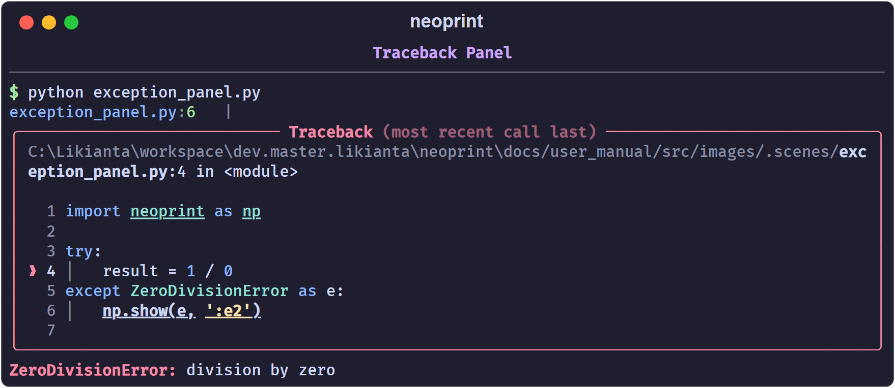
:e3 — traceback with locals
Same as :e2, plus the local variables of each frame:
np.show(e, ':e3')
Useful when the bug depends on values you cannot guess from the code. Locals
whose names start with dunder or sunder (__x__, _x_) are hidden.
Printing the current exception
Inside an except block you can omit the argument entirely; neoprint reads the
current exception from sys.exc_info():
try:
load_config()
except Exception:
np.show(':e') # same as np.show(':e2')
Combining with other marks
e combines freely with v, d, and i:
np.show(e, ':v8') # one red line, no traceback
Shorthand
from neoprint import exception
try:
...
except Exception as e:
exception(e) # same as np.show(e, ':e2')
Global excepthook
When config.rich_traceback is on (the default), uncaught exceptions are
printed by Rich’s excepthook instead of Python’s bare traceback, without any
call to np.show. Set show_traceback_locals to include locals there too:
import neoprint as np
np.config(show_traceback_locals=True)
See Configuration.
Source Layers
Every message starts with a head like main.py:10. By default that head points
at the line that called np.show. The p mark moves the head up the call
stack, so a shared logging helper can report the place that used it.
The stack
p0 is the frame of the np.show call itself, p1 is its caller, p2 its
caller’s caller, and so on. Bare :p is :p1.
import neoprint as np # ln1
def aaa(): # ln2
def bbb(): # ln3
def ccc(): # ln4
np.show('DDD', ':p0') # ln5 -> ln5
np.show('CCC', ':p1') # ln6 -> ln9
np.show('BBB', ':p2') # ln7 -> ln10
np.show('AAA', ':p3') # ln8 -> ln11
ccc() # ln9
bbb() # ln10
aaa() # ln11
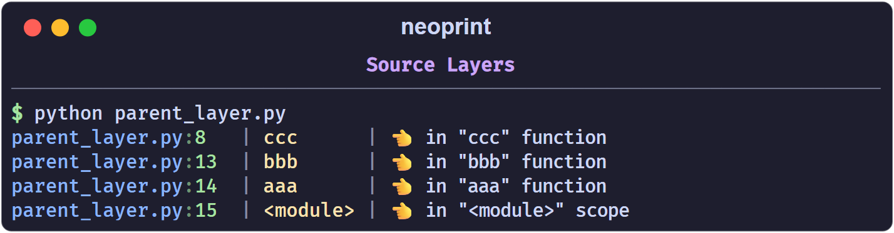
p0 reports the line that printed; p1 reports the line that called that
function; and so on. Going further than the stack depth raises an error, so
the practical range is p0 to p3.
Why it matters
Consider a library method that is called from many places. With :p, each
message points at the caller, not at the library:
import neoprint as np
class Library:
def borrow_book(self, book_name):
np.show('borrowed "{}"'.format(book_name), ':p')
return Book(book_name)
lib = Library()
# in aaa.py
lib.borrow_book('Stray Birds')
# in bbb.py
lib.borrow_book('How the Steel Was Tempered')
aaa.py:8 | borrowed "Stray Birds"
bbb.py:10 | borrowed "How the Steel Was Tempered"
That is how you trace which script triggered a shared code path.
Temporarily elevate stack pointer
Use np.elevate_parent_level to redirect :p<n> to n+1 place:
import neoprint as np
from random import choice
def source_test():
if choice((True, False)):
print('Server is working fine', ':pv4')
else:
print('Server is unavailable for now', ':pv8')
def proxy_test():
with np.elevate_parent_level():
source_test()
# by client a
source_test()
...
# by client b
proxy_test()
The proxy hides itself and reveals print header points to the position of client b.
Relationship with varnames
:p only moves the head (the source prefix). Variable names from :n are
always read from the line where np.show is written, regardless of :p. In a
shared helper, the values passed to the helper still come from the helper’s own
line, while the head shows the outside caller.
Note that p2 and above rely on the interpreter’s stack being intact. Inside
heavy wrappers or asynchronous code, prefer :p1.
Progress Bars
Neoprint ships two forms of progress display: an object you drive manually
(np.Progress) and a generator you wrap around an iterable (np.progress).
np.Progress
from time import sleep
import neoprint as np
names = ['Alice', 'Bob', 'Carol']
with np.Progress(total=len(names)) as prog:
for name in names:
prog.update(name)
sleep(0.05)
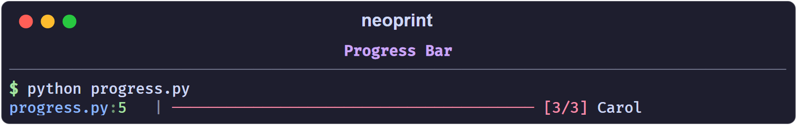
The bar fills with ─, the counter shows index/total, and update(label)
prints a label on the right, truncated to the remaining width. The head
(main.py:6) comes from the with line.
total is required
update() decides the bar type on its first call. If total is still None
at that point, neoprint raises NotImplementedError — the spinner-style
indeterminate bar is not implemented yet. Set total either in the constructor
or as a property before the first update():
with np.Progress() as prog:
prog.total = len(items)
for item in items:
prog.update()
Setting total after the first update() raises ValueError.
Indicators
indicator_style selects the read-out:
| Style | Example |
|---|---|
'counter' (default) | [ 42/100] |
'digital' | ( 42%) |
'decimal' | ( 42.00%) |
'none' | bar only |
color accepts 'red' (default), 'green', 'yellow', or 'blue'.
with np.Progress(total=100, indicator_style='decimal', color='green') as p:
...
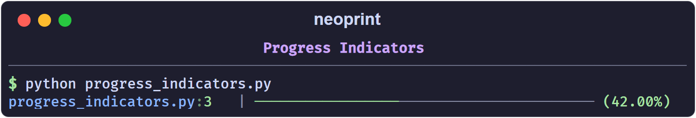
np.progress
np.progress(iterable) wraps an iterable in a Progress block and yields its
items. For sized containers the total is inferred; for generators pass it
explicitly:
for name in np.progress(names):
sleep(0.05)
def gen():
for name in names:
yield name
for name in np.progress(gen(), total=len(names)):
sleep(0.05)
Plain items only update the counter. To show a label, wrap the value in
np.ProgressItem:
for name in np.progress([np.ProgressItem(n) for n in names]):
sleep(0.05)
ProgressItem(data, label='') yields data from the loop while displaying
label (defaults to str(data)).
Notes
- The bar width adapts to the console width, measured when the
Progressobject is created. close()(called by thewithblock) resets the object, so aProgressinstance can be reused.- In debug mode (
np.config(debug_print=True)), the bar prints one line per update instead of overwriting; useful when output is captured to a file. np.Spinner,np.spinner, andProgresswithouttotalare placeholders; do not rely on them yet.
A combined example
import neoprint as np
from time import sleep
items = ['a', 'b', 'c']
np.show(':d', 'downloading')
with np.Progress(total=len(items), color='green') as p:
for item in items:
p.update(item)
sleep(0.05)
np.show(':d2v4t', 'done')
Configuration
Global switches live in a single object, np.config. Call it with keyword
arguments to change settings, and np.config.reset() to restore defaults.
import neoprint as np
np.config(show_varnames=True)
...
np.config.reset()
Unknown names raise AssertionError, which catches typos early.
Options
| Option | Default | Effect |
|---|---|---|
show_source | True | show the filename:lineno head |
show_varnames | False | always show variable names, as if :n were passed |
disable_varnames | False | never show variable names, and skip source parsing |
console_width | terminal width | width used for dividers, progress bars, wrapping |
multiline_indent | 2 | spaces per nesting level in expanded output |
legacy_windows | False | reduce color effects on legacy consoles |
rich_traceback | True | install Rich’s excepthook for uncaught exceptions |
show_traceback_locals | False | include locals in uncaught-exception panels |
sourcemap_alignment | 'left' | pad line numbers so heads align |
debug_print | False | verbose internal logging of neoprint itself |
debug_output | False | collect printed output for tests |
A few options are accepted but have no visible effect yet: show_funcname,
show_verbosity_tag, path_style, clear_unfinished_stream, subthreaded.
They are reserved for upcoming releases.
Environment variables
Some switches can be set before the interpreter imports neoprint:
| Variable | Equivalent |
|---|---|
NEOPRINT_DEBUG=1 | debug_print=True |
NEOPRINT_DEBUG_PRINT=1 | debug_print=True |
NEOPRINT_DISABLE_VARNAMES=1 | disable_varnames=True |
NEOPRINT_LEGACY_WINDOWS=1 | legacy_windows=True |
This is useful for CI, where you may want to disable variable-name lookups
without touching the code. Note that console_width has no environment
variable; set it from code with np.config(console_width=100).
A typical setup
import neoprint as np
# a wide, stable layout in CI, verbose helpers locally
np.config(
console_width=120,
multiline_indent=2,
show_varnames=True,
)
Debugging neoprint itself
debug_print=True makes neoprint narrate its own decisions (frame resolution,
markup analysis, varname lookups) to stderr. It is meant for reporting bugs,
not for daily use.
API Reference
Everything below is available from the package root:
import neoprint as np
Printing
| Name | Signature | Equivalent |
|---|---|---|
np.show | show(*args, markup=None) | the main entry point |
np.print | print(*args, markup=None) | alias of np.show |
np.debug | debug(*args, markup=None) | show(..., ':v1') |
np.info | info(*args, markup=None) | show(..., ':v2') |
np.success | success(*args, markup=None) | show(..., ':v4') |
np.warning | warning(*args, markup=None) | show(..., ':v6') |
np.error | error(*args, markup=None) | show(..., ':v8') |
np.divider | divider(*args, markup=None) | show(..., ':d1') |
np.exception | exception(*args, markup=None) | show(..., ':e2') |
np.expand | expand(*args, markup=None) | show(..., ':l1') |
np.expand2 | expand2(*args, markup=None) | show(..., ':l2') |
np.index | index(*args, markup=None) | show(..., ':i2') |
All printing functions return None. A markup passed as the first or last
positional argument is merged with the shorthand’s own markup, so
np.warning(x, ':n') is the same as np.show(x, ':v6n').
np.vshow exists as the :n1 shorthand, but variable-name resolution keys on
the called function name, and vshow is not recognizable to the analyzer.
Use np.show(x, ':n1') instead.
markdown
markdown(*args: str) -> None
Accept one argument (the Markdown text) or two arguments (the text and a markup, in either order):
np.markdown('# Title\n\nSome **bold** text.')
np.markdown(':n', '**bold**')
Formatting
format(*args, markup=None) -> str
Returns the same layout that np.show would print, but with color codes
stripped, so it can be logged to a file or embedded in another message.
format_list(*args, markup=None) -> list[TextObject]
The lower-level pipeline. Each returned object has a
render(color_code_scheme=...) method, where the scheme is 'plain',
'ansi', or 'bbcode'. Use it when you want to post-process pieces rather
than print them directly. The remaining parameters (_frame,
_elevate_parent_level, _mark_position, _raise_builtin_print) are
internal.
Text objects
Text(obj, color='default', style='')
A piece of text with an explicit color and style. True, False, and None
are rendered green, red, and magenta by default. Colors can be names, Rich
styles, or #rrggbb values.
Markdown(text)
A Rich-rendered Markdown block. Prefer np.markdown() for printing, which
also takes care of the markup and line break.
Scopes and counters
scope(name='') -> contextmanager
Opens a named scope for the with block. Inside it, :i2 (and np.index)
counts per scope and :t3 reports scope-level timing. Without a name, a
random short id is generated.
Progress bars
Progress(total=None, indicator_style='counter', color='red')
A manual progress bar. indicator_style is one of 'counter', 'digital',
'decimal', or 'none'; color is one of 'blue', 'green', 'yellow',
'red'.
Methods:
| Method | Effect |
|---|---|
update(item=None) | advance one step; item is an optional label |
close() | move to a new line and reset |
reset() | reset the counter and total |
total (property) | read or set the total before the first update() |
total is required for a normal bar. A Progress without a total raises
NotImplementedError on the first update().
progress(obj, total=None, **kwargs) -> Iterator
A generator that wraps an iterable and advances automatically. For concrete
sized containers, total is inferred from len(obj); generators need an
explicit total.
ProgressItem(data, label='')
Wraps one item of a progress() iteration to attach a label. The loop
receives data, and the bar shows label (or str(data) when omitted).
Spinner and spinner() are exported as reserved names and are not
implemented yet.
Configuration
config(**kwargs) -> None
config.reset() -> None
Change global options, or restore defaults. See Configuration for the full option table.
Package control
setup(package_name=None) -> None
unload() -> None
np.setup(__package__) replaces the builtin print with np.print for the
given package, so existing print calls gain neoprint’s formatting without
being edited. np.unload() restores the builtin print.
Advanced
| Name | Purpose |
|---|---|
np.console | the underlying Rich console |
np.bprint | the original builtin-style print, always unformatted |
np.FrameInfo | frame inspection used by source prefixes and aliases |
np.elevate_parent_level | adjust which frame is reported as the caller |
np.debugger | internal debugger switch object |
np.text_object | all text object classes |